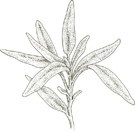
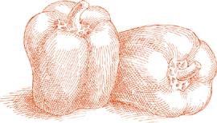

ВКУС, В ИТАЛЬЯНСКИХ БЛЮДАХ формируется снизу. Это не покрытие, а основа. В соусе для пасты, ризотто, супе, фрикасе, рагу или блюде из овощей основа вкуса поддерживает, поднимает и подчеркивает главные ингредиенты. Понять этот архитектурный принцип, центральный для структуры итальянской кухни, и ознакомиться с тремя ключевыми техниками, которые позволяют его применять, — значит сделать большой шаг к овладению итальянским вкусом. Эти техники известны как battuto, soffritto и insaporire.
Название происходит от глагола battere, что означает «ударять», и описывает нарезанную смесь ингредиентов, полученную путем «ударения» их на разделочной доске с помощью ножа. Когда-то почти неизменными компонентами battuto были сало, петрушка и лук, все очень мелко нарезанные. Чеснок, сельдерей или морковь могут быть добавлены в зависимости от блюда. Главное изменение, которое принесло современное использование, — это замена сала на оливковое масло или масло, хотя многие деревенские повара все еще полагаются на более насыщенный вкус последнего. Как бы ни было сформулировано, battuto является основой практически каждого соуса для пасты, ризотто или супа, а также бесчисленных мясных и овощных блюд.
Когда battuto обжаривается в кастрюле или сковороде до тех пор, пока лук не станет прозрачным, а чеснок, если он есть, не приобретет бледно-золотистый цвет, он превращается в soffritto. Этот шаг предшествует добавлению основных ингредиентов, какими бы они ни были. Хотя многие повара готовят soffritto путем обжаривания всех компонентов battuto одновременно, более тщательное приготовление требует, чтобы лук и чеснок были обжарены отдельно. Сначала обжаривается лук, когда он становится прозрачным, добавляется чеснок, а когда чеснок приобретает цвет, добавляется остальная часть battuto. Причины две: первая, если вы начнете с обжаривания лука, вы создаете более насыщенную основу вкуса для обжаривания battuto; вторая, поскольку луку требуется больше времени для обжаривания, чем чесноку, если вы положите их одновременно, к моменту, когда лук станет прозрачным, чеснок будет слишком темным. Однако, если ваш battuto рецепт требует панчетты, готовьте лук и панчетту вместе, чтобы использовать жир панчетты, тем самым уменьшая необходимость в других жирах.
Неправильно выполненное soffritto испортит вкус блюда, независимо от того, насколько тщательно выполняются все последующие шаги. Если лук просто тушится или недостаточно обжарен, вкус соуса, или ризотто, или овощей никогда не раскроется и останется слабым. Если чеснок станет темным, его резкость будет доминировать над всеми другими вкусами.
Примечание
 battuto обычно, но не всегда, становится soffritto.
Иногда вы комбинируете его с другими ингредиентами блюда в сыром виде,
a crudo, как говорит итальянская фраза. Это практика, к которой
прибегают, чтобы получить менее яркий вкус, например, при приготовлении
жаркого из баранины, в котором мясо готовится вместе с
battuto a crudo с самого начала. Другой пример —
песто, истинное battuto a crudo, хотя, возможно, потому
что оно традиционно толчется с помощью ступки, а не нарезается ножом, его
не всегда распознают как таковое. Тем не менее, есть много итальянских
поваров, которые, говоря о любом battuto, могут сказать, что они
делают
пестино, «маленькое песто».
battuto обычно, но не всегда, становится soffritto.
Иногда вы комбинируете его с другими ингредиентами блюда в сыром виде,
a crudo, как говорит итальянская фраза. Это практика, к которой
прибегают, чтобы получить менее яркий вкус, например, при приготовлении
жаркого из баранины, в котором мясо готовится вместе с
battuto a crudo с самого начала. Другой пример —
песто, истинное battuto a crudo, хотя, возможно, потому
что оно традиционно толчется с помощью ступки, а не нарезается ножом, его
не всегда распознают как таковое. Тем не менее, есть много итальянских
поваров, которые, говоря о любом battuto, могут сказать, что они
делают
пестино, «маленькое песто».
Шаг, который следует за soffritto, называется insaporire, «наделение вкусом». Обычно он применяется к овощам, поскольку в итальянской кухне овощи являются критически важным ингредиентом в большинстве первых блюд — пастах, супах, ризотто — и во многих фрикасе и рагу, а также часто составляют важное блюдо сами по себе. Но этот шаг также может применяться к фаршу, который будет превращен в мясной соус или мясной рулет, или к рису, когда он обжаривается в soffritto как предварительный этап приготовления ризотто. Когда вы осознаете это, вы заметите его в бесчисленных рецептах.
Техника insaporire требует, чтобы вы добавили овощи или другие основные ингредиенты в базу soffritto и, на очень сильном огне, быстро обжарили их, пока они полностью не покроются вкусовыми элементами основы, особенно нарезанным луком. Часто можно проследить неудовлетворительный вкус, неудачу блюд, которые претендуют на итальянский стиль, к нежеланию некоторых поваров тщательно выполнять этот шаг, к их недостатку времени на достаточном огне или даже к тому, что они полностью его пропускают.
soffritto иногда выполняется с оливковым маслом в качестве единственного жира, но в тех случаях, когда вкус оливкового масла может быть навязчивым, итальянские повара используют масло вместе с нейтральным растительным маслом. Сочетание двух позволяет обжаривать при более высокой температуре, не подгорая масло или не очищая его.

Из всех ингредиентов, используемых в итальянской кухне, ни один не придаёт более насыщенный вкус, чем анчоусы. Это исключительно универсальный вкус, который может адаптироваться к любой роли, которую вы хотите ему назначить. Измельчённые анчоусы, растворяясь в соках жаркого, теряют свою явную идентичность, в то время как они вносят глубину вкуса в мясо. Когда анчоусы выходят на первый план, как в соусе для пасты или с расплавленным моцареллой, их завораживающий вкус полностью овладевает нашими вкусовыми рецепторами. Анчоусы незаменимы в багна кауда, пьемонтском соусе для сырых овощей, и в различных формах сальса верде, пикантных зелёных соусов, подаваемых с варёным мясом или рыбой.
Какие анчоусы выбрать и как их подготовить
Чем
мясистее анчоусы, тем богаче и округлее их вкус. Мясистейшие анчоусы — это
те, что хранятся под солью в больших банках и продаются поштучно, на вес.
Четверть фунта — это, в большинстве случаев, достаточное количество для
покупки за один раз. Подготовьте филе следующим образом:
• Промойте целые анчоусы под холодной проточной водой, чтобы удалить как можно больше соли, использованной для их консервирования.
• Берите по одному анчоусу за раз, держите его за хвост и другой рукой аккуратно с помощью ножа снимайте всю кожу. После снятия кожи удалите спинной плавник вместе с крошечными косточками, прикреплёнными к нему.
• Вставьте ноготь в открытый конец анчоуса, противоположный хвосту, и проведите им по кости, расправляя анчоуса до хвоста. Рукой ослабьте и поднимите позвоночник, разделив рыбу на два филе без костей. Проведите кончиками пальцев по обеим сторонам филе, чтобы обнаружить и удалить любые оставшиеся кусочки костей.
• Промойте под холодной проточной водой, затем тщательно высушите бумажными полотенцами. Поместите филе в мелкую посуду. Когда один слой филе покроет дно посуды, налейте достаточно оливкового масла первого холодного отжима, чтобы покрыть его. По мере добавления филе в посуду, поливайте оливковым маслом каждый слой. Убедитесь, что верхний слой полностью покрыт маслом.
• Если вы не собираетесь использовать их в течение 2 или 3 часов, накройте посуду и поставьте в холодильник. Если у посуды нет своей крышки, используйте пленку. Анчоусы будут храниться 10 дней до 2 недель, но лучше всего их есть в течение первой недели. Приготовленные таким образом, филе очень вкусны как закуска или даже перекус, когда намазаны на толстый слой масла на корочке хлеба.
Примечание
Если вы не
можете найти описанные выше солёные целые анчоусы и должны купить готовые
филе, ищите те, что упакованы в стекло, чтобы вы могли выбрать более
мясистые. Не поддавайтесь искушению купить анчоусы по низкой цене, потому
что действительно хорошие никогда не бывают дешевыми, а дешёвые, скорее
всего, окажутся действительно ужасными — мучнистыми, пропитанными солью —
продуктами, которые незаслуженно испортили репутацию анчоусов.
Если вы используете консервированные анчоусы, не оставляйте оставшиеся в банке. Уберите их, сверните в рулетики, положите в маленькую баночку или глубокую тарелку, накройте оливковым маслом первого холодного отжима и поставьте в холодильник.
Не используйте анчоусную пасту из тюбика, если можете этого избежать. Она резкая и солёная и имеет очень мало того тёплого, привлекательного аромата, который является основной причиной использования анчоусов.
Приготовление с анчоусами
В
большинстве случаев анчоусы мелко нарезают, чтобы они могли легче
растворяться и смешивать свой вкус с другими ингредиентами. Никогда не
добавляйте нарезанные анчоусы в очень горячее масло, потому что они будут
жариться и затвердевать вместо того, чтобы растворяться, и их вкус может
стать горьким. Уберите с огня сковороду при добавлении анчоусов, ставьте
её обратно на плиту только тогда, когда, помешивая, анчоусы начали
превращаться в пасту. Если у вас есть возможность, поставьте рядом другую
кастрюлю с кипящей водой, поставьте сковороду с анчоусами на неё, как на
водяной бане, и помешивайте анчоусы, пока они не растворятся.
Бальзамический уксус, многовековая специализация, производимая в провинции Модена, к северу от Болоньи, полностью изготавливается из уваренного сока — концентрированного сладкого сока белого винограда. Настоящий бальзамический уксус созревает в течение десятилетий в последовательности бочек, каждая из которых сделана из разного дерева.
Как его оценить
Цвет должен
быть глубоким, насыщенным коричневым, с яркими вспышками света. Когда вы
вращаете уксус в бокале, он должен покрывать внутреннюю поверхность
бокала, как густой, но текучий сироп, не пятнистый и не слишком жидкий.
Его аромат должен быть интенсивным, приятно проникающим. Глоток уксуса
даст сбалансированные сладкие и кислые ощущения, ни слишком приторные, ни
слишком резкие, на плотном и бархатистом теле. Он никогда не бывает
дешевым, и он слишком ценен и редок, чтобы его помещали в контейнер,
значительно больший, чем флакон для духов. Этикетка должна полностью
содержать официально установленное наименование, которое гласит:
Aceto Balsamico Tradizionale di Modena. Все остальные так
называемые бальзамические уксусы — это обычный коммерческий винный уксус,
ароматизированный сахаром или карамелью, не имеющий никакого сходства с
традиционным продуктом.
Как его использовать
Настоящий
бальзамический уксус используется экономно. В салате он никогда не
заменяет обычный уксус; достаточно добавить несколько капель к базовой
заправке из оливкового масла и чистого винного уксуса. В кулинарии его
следует добавлять в самом конце процесса или близко к этому, чтобы его
аромат сохранился в готовом блюде. Aceto balsamico великолепен на
нарезанных свежих клубниках, когда их перемешивают с уксусом
непосредственно перед подачей. К сожалению, бальзамический уксус стал
клише того, что иногда описывается как «креативная» кухня, так же как
помидоры и чеснок когда-то были клише итальянской кухни в спагетти-хаусах.
Его не следует использовать так часто или так безразлично, чтобы его вкус
потерял способность удивлять, а его выразительные акценты стали
утомительными от повторения.
Базилик

Самое полезное, что можно знать о базилике, это то, что чем меньше он готовится, тем лучше, и что его аромат никогда не бывает более соблазнительным, чем в сыром виде. Следовательно, вы добавите базилик в соус для пасты только после его приготовления, когда он будет перемешан с пастой. Исходя из этого, самый концентрированный из соусов на основе базилика, песто, всегда следует использовать в сыром виде, при комнатной температуре, никогда не подогревая. Иногда базилик готовят в супе или рагу или в другом блюде, жертвуя некоторой живостью его неограниченного аромата, чтобы соединить его с ароматом других ингредиентов. Если вы сомневаетесь, однако, или импровизируете, добавьте его в самый последний момент, непосредственно перед подачей.
Как использовать базилик
Используйте
только самый свежий базилик, который сможете найти. Не довольствуйтесь
чернеющими, увядшими листьями. Если вы выращиваете его сами, собирайте
только то, что вам нужно в тот день, желательно срывая листья рано утром,
до того как они получили слишком много солнца. Когда вы будете готовы
использовать базилик, быстро промойте его под холодной проточной водой или
протрите листья влажной тканью. Если в рецепте не указаны тонкие,
нарезанные полоски, лучше не резать базилик ножом. Если вы не хотите
добавлять целые листья в блюдо, рвите их на более мелкие кусочки руками, а
не нарезайте. Никогда не используйте сушеный или порошкообразный базилик.
Многие люди замораживают или консервируют базилик. Я предпочитаю
использовать его свежим, а если он недоступен, подождать, пока его сезон
не вернется.
Лавр
Лавр может быть самым универсальным травом в итальянской кухне. Он используется в соусах для пасты, ароматизирует такие разные консервированные продукты, как козий сыр в оливковом масле или вяленые инжиры, находит свое место в большинстве маринадов для мяса, является идеальной травой для барбекю: на рыбном шампуре, или на телячьей печени, или даже в самом огне. Нет более приятного сочетания, чем лавровые листья с грушами, приготовленными в красном вине, или с вареными каштанами.
Что купить
Лавровые
листья прекрасно сушатся и хранятся бесконечно. Покупайте только целые
листья, а не крошеные или порошковые, и храните их в плотно закрытой
стеклянной банке в прохладном шкафу. Перед использованием, независимо от
того, свежие ли листья или сушеные, слегка протрите каждый лист влажной
тканью.
Примечание
Если у вас
есть сад, терраса или балкон, лавр — это выносливое многолетнее растение,
которое быстро вырастает в красивое растение с почти неисчерпаемым запасом
листьев для кухни. Если ваши зимы холодные и долгие, приносите лавр в дом
до весны.
Фаджоли
Бобовые широко используются по всей Италии, но нигде они не получают такого внимания, как в центральных регионах Тосканы, Абруццо, Умбрии и Лацио. Тосканцы предпочитают каннеллини или белые фасоль. Нут и фава-бобы преобладают в Абруццо и Лацио. Умбрия славится своими чечевицей. На севере есть уголок обожания бобов, который соперничает с центром, и он находится в венетском северо-восточном углу страны, где, возможно, производится самая лучшая версия классического бобового супа — паста э фаджоли. Фасоль, которую используют венетцы, имеет мраморный розовый и белый цвет, а наиболее ценным является ламон, прекрасно покрытый пятнышками в сыром виде и темно-красный в готовом.
Некоторые бобы доступны свежими лишь в течение короткого времени в году, и за пределами Италии некоторые из них редко встречаются в свежем виде. Вместо них вы можете использовать консервированные или сушеные бобы. Сушеные предпочтительнее, и не только потому, что они гораздо экономичнее, чем консервированные. При правильном приготовлении сушеные бобы имеют вкус и консистенцию, которые не могут сравниться с пресными, пюреобразными консервированными.
Приготовление сушеных бобов
Следующие
инструкции действительны для всех сушеных бобовых, которые нужно
предварительно готовить, таких как белые каннеллини, бобы Грейт
Нортерн, красные и белые фасоль, клюквенные бобы, нут и фава-бобы.
Чечевица не требует предварительной готовки.
• Положите количество бобов, необходимое по рецепту, в миску и добавьте достаточно воды, чтобы покрыть их как минимум на 7.5 см. Поставьте миску в укромный уголок вашей кухни и оставьте ее там на ночь.
• Когда бобы закончат замачиваться, слейте воду, промойте их в свежей холодной воде и положите в кастрюлю, которая вмещает бобы и достаточно воды, чтобы покрыть их как минимум на 7.5 см. Накройте кастрюлю крышкой и включите средний огонь. Когда вода закипит, отрегулируйте огонь так, чтобы она медленно, но равномерно кипела. Готовьте бобы до мягкости, но не до состояния пюре, примерно 45 минут до 1 часа. Добавляйте соль только тогда, когда бобы почти полностью мягкие, чтобы их кожица не пересохла и не треснула во время готовки. Пробуйте их периодически, чтобы знать, когда они готовы. Держите бобы в жидкости, в которой вы их готовили, до тех пор, пока не будете готовы их использовать. При необходимости их можно приготовить за день или два заранее и хранить, всегда в их жидкости.
Это икра самки тонкослойного серого мулета, которая была извлечена с неповрежденной мембраной, посолена, слегка прижата, промыта и высушена на солнце. Она имеет форму длинной, плоской слезы, обычно длиной от 1от 0 до 18 см, темного янтарного цвета и обычно продается парами. Ранее она всегда была завернута в воск, но теперь чаще вакуумируется в прозрачной пластике. Самая лучшая bottarga поступает от мулета — muggine на итальянском — выловленного в солоноватых водах Кабраса, озера на западном побережье Сардинии.
Вкус хорошей bottarga деликатно острый и соленый, очень приятно возбуждающий на вкус. После снятия мембраны ее можно нарезать очень тонкими ломтиками и добавлять в зеленые салаты или к отварным каннеллини, или подавать в качестве закуски на тонких поджаренных кусочках масла с ломтиком огурца. Она восхитительна, натертая и смешанная с пастой. Bottarga никогда не готовится.
Другой вид bottarga — это та, что сделана из икры тунца; она гораздо больше, темно-коричневого цвета и имеет форму длинного кирпича. Она суше, острее и имеет более грубый вкус, чем bottarga из мулета, и является гораздо более дешевой, но нежелательной заменой. Тунец bottarga довольно распространен в странах на восточных берегах Средиземного моря.
Хлебные крошки, используемые в итальянской кухне, изготавливаются из хорошего черствого хлеба без добавления каких-либо ароматизаторов. Они должны быть очень сухими, иначе они станут клейкими, особенно в тех блюдах, где их смешивают с пастой. Как только хлеб будет измельчен в мелкие крошки, высушите их, либо разложив на противне и запекая в духовке при 190°C (375°F) в течение 15 минут, либо быстро поджарив их на сковороде из чугуна.
Brodo
Бульон, используемый итальянскими поварами для ризотто, для супов и для тушения мяса и овощей, представляет собой жидкость, в которую мясо, кости и овощи отдали свой вкус, но это не сильная, плотная редукция этих вкусов. Это не бульон, как это понимается в французской кухне. Он легкий и мягкий, помогая блюдам, частью которых он является, лучше раскрывать вкус, не привлекая к себе внимания.
Итальянский бульон в основном готовится из мяса, вместе с некоторыми костями, чтобы придать ему немного телесности. Когда я готовлю бульон, я всегда стараюсь иметь в кастрюле несколько мозговых костей. Сам мозг становится вкусной закуской позже на гриле или поджаренном хлебе, приправленном хреном.
Лучший бульон получается от полноценного боллито миста. Однако вы можете не захотеть готовить боллито миста каждый раз, когда вам нужно пополнить запасы бульона. Если вы активный повар, вы можете собирать и замораживать мясо для бульона из обрезков и подготовки разных частей телятины, говядины и курицы, иногда утаивая сочный кусочек мяса перед тем, как его измельчить для фарша или мясного соуса, или прежде чем он попадет в рагу из говядины или телятины. Не используйте баранину или свинину, вкус которых слишком силен для бульона. Используйте куриные потроха и каркас очень экономно, так как их вкус может быть неприятно навязчивым. Когда будете готовы готовить бульон, обогатите ассортимент значительным свежим куском говяжьей грудинки или шеи.
1½–2 литров
Соль
1 морковь, очищенная
1 средняя луковица, очищенная
1 или 2 стебля сельдерея
¼–½ красного или желтого сладкого перца, очищенного от семян
1 маленький картофель, очищенный
1 свежий, спелый помидор ИЛИ консервированный итальянский сливочный помидор, слитый
5 фунтов (2250 г) ассорти из говядины, телятины и курицы (последняя по желанию), из которых не более 2 фунтов (900 г) могут быть костями
1. Поместите все ингредиенты в большую кастрюлю и добавьте достаточно воды, чтобы покрыть на 5 см. Накройте крышкой, поставленной наискосок, включите средний огонь и доведите до кипения. Как только жидкость начнет закипать, уменьшите огонь до самого слабого кипения.
2. Снимите пену, которая всплывает на поверхность, сначала обильно, затем постепенно уменьшая количество. Готовьте в течение 3 часов, всегда на медленном огне.
3. Процедите бульон через крупное металлическое сито, выстланное бумажными полотенцами, выливая его в керамическую или пластиковую миску. Дайте полностью остыть, не накрывая.
4. Когда остынет, поместите в холодильник на несколько часов или на ночь, пока жир не поднимется на поверхность и не затвердеет. Снимите и выбросьте жир.
5. Если вы используете бульон в течение 3 дней после его приготовления, верните миску в холодильник. Если вы планируете хранить его дольше 3 дней, заморозьте, как описано в примечании ниже.
Как хранить бульон
Бульон
можно хранить в холодильнике максимум 3 дня после приготовления, но если
вы не уверены, что используете его так быстро, лучше заморозить.
Невозможно переоценить, насколько удобно всегда иметь под рукой
замороженный бульон. Самый практичный способ — заморозить его в формах для
льда, вынуть, как только он затвердеет, и переложить кубики в герметичные
пластиковые пакеты. Распределите кубики между несколькими контейнерами,
чтобы, когда вы будете использовать бульон, открывать только столько
пакетов, сколько вам нужно.
Каперсы
Каперсы — это цветы, срезанные, пока они еще плотно закрытые бутоны, растения, чьи паутинные ветви обвивают каменные стены и скалистые холмы по всей Средиземноморской области. Каперсы широко используются в сицилийской кухне, но ни одна итальянская кухня не должна обходиться без них. Они занимают свое место во многих классических блюдах, в соусах для пасты, мяса, рыбы, в начинках, а их живой, острый, но не резкий вкус делает их одним из тех приправ, которые легко поддерживают импровизационный, непринужденный стиль, характерный для итальянской кухни.
На что обращать внимание
Когда-то у
меня была сильная предрасположенность к самым маленьким каперсам, сорту
nonpareil из Прованса. Хотя они, безусловно, желательны, сейчас я
предпочитаю работать с более крупными каперсами с островов у Сицилии и еще
более крупными с Сардинии, вкус которых более насыщенный и выразительный.
Каперсы, особенно провансальские, обычно маринованы в уксусе. У них есть
преимущество — они могут храниться бесконечно, особенно если их хранить в
холодильнике после открытия. Недостаток в том, что уксус изменяет их вкус,
делая его более острым, чем нужно. В Италии, особенно на юге, каперсы
упаковываются в соль, и они имеют лучший вкус. Их можно найти и на рынках
за границей, особенно в хороших этнических магазинах. Их недостаток в том,
что перед использованием их нужно замачивать в воде на 10-15 минут и
промывать в нескольких сменах воды, иначе они будут слишком солеными.
Также они не могут храниться так долго, как маринованные в уксусе, потому
что, когда соль в конечном итоге впитывает слишком много влаги и
становится мягкой, они начинают портиться. Цвет соли указывает на
состояние каперсов. Он должен быть чисто белым; если он желтый, каперсы
испорчены.
Фонтину изготавливают из непастеризованного молока коров, которые пасутся на горных лугах в Валь д'Aоста, альпийском регионе Италии, соседствующем с Францией и Швейцарией. Фонтину имеет много подражателей как внутри, так и за пределами Италии, но только версия из Валь д'Aоста обладает сладким, отчетливым ореховым вкусом , который, вероятно, делает ее самым лучшим сыром своего рода. Она идеально подходит для плавления в фондю по-пьемонтски, или для запеченной спаржи, или для связывания кусочка прошутто с обжаренной телячьей котлетой. Ее масляный вкус исключительно нежный, но, в отличие от вкуса ее подражателей, не незначительный. Она идеальна для приготовления блюд, когда вы хотите получить самый тонкий сырный вкус.

Сравнивать итальянскую кухню с чесноком не совсем правильно, но и не совсем неправильно. Это может показаться невероятным, но есть итальянцы, которые избегают чеснока, и многие блюда дома и в ресторанах готовятся без него. Тем не менее, если бы чеснока больше не существовало, кухню было бы трудно узнать. Как бы выглядела жареная курица без чеснока, или что-то с моллюсками, или жареные грибы, или песто, или бесчисленное количество рагу и фрикасе и соусов для пасты?
При подготовке чеснока для итальянской кухни зубчики всегда очищаются. После очистки их можно использовать целиком, раздавить, нарезать тонкими ломтиками или мелко нарезать, в зависимости от того, насколько сильно вы хотите, чтобы его вкус проявлялся. Самый нежный аромат исходит от целого зубчика, а самый яркий — от нарезанного. Наименее приемлемый способ приготовления чеснока — это выжимание его через пресс. Полученная влажная масса имеет резкий вкус и не может быть правильно обжарена.
Возможно, и часто желательно, чтобы аромат был едва заметен, что можно достичь, обжаривая чеснок так коротко, чтобы он не окрасился, а затем позволяя ему томиться в соках других ингредиентов, как, например, когда тонкие ломтики готовятся в томатном соусе. Иногда может быть уместен более выраженный чесночный акцент, но никогда, в хорошей итальянской кухне, не следует допускать, чтобы он стал резким или горьким. При обжаривании чеснока никогда не отворачивайтесь от него, не позволяйте ему стать темно-коричневым, потому что именно тогда появляется неприятный запах и вкус. В некоторых случаях, когда баланс вкусов в блюде требует и поддерживает особенно интенсивный чесночный вкус, зубчики чеснока могут быть приготовлены до светло-коричневого цвета, как у ореховых скорлуп. Однако для большинства блюд наибольший цвет, который вы можете позволить чесноку, — это бледное золото.
Выбор и хранение
Чеснок
доступен круглый год, но лучше всего он, когда только что собран, весной.
Когда он молодой и свежий, зубчики нежные и влажные, а кожица мягкая и
чисто-белая. Вкус настолько сладкий, что можно не беспокоиться о
количестве. С возрастом, и, к сожалению, вне районов выращивания, старый
чеснок — это то, что вы найдете, он высыхает, теряя сладость и приобретая
резкость, его кожица становится шелушащейся и хрупкой, а мякоть
морщинистой и желтой, как цвет старого слоновой кости. Он все еще хорош
для приготовления, но его нужно использовать экономно и готовить до еще
более бледного цвета, чем свежий. Я видела, как повара разрезают зубчик,
чтобы удалить любую часть, которая могла стать зеленой. Я не считаю это
необходимым, но я выбрасываю зеленый росток, когда он прорастает снаружи
зубчика.
Выбирайте головку чеснока по весу и размеру. Чем тяжелее она в руке, тем свежей она, вероятнее всего, будет, а большие головки имеют более крупные зубчики, которые дольше высыхают. Используйте только целый чеснок, не поддавайтесь искушению использовать подготовленный нарезанный чеснок, чесночные масла или чеснок в порошке. Все такие продукты слишком резкие для итальянской кухни.
Храните чеснок в его кожуре до тех пор, пока не будете готовы его использовать. Не нарезайте его задолго до того, как он вам понадобится. Храните чеснок вне холодильника в горшке с крышкой, которая достаточно свободно прилегает, чтобы воздух мог проходить. Существуют перфорированные чесночные горшки, которые отлично справляются с этой задачей. Косы из чеснока могут выглядеть довольно красиво, вися на кухне, но головки быстро высыхают, и в какой-то момент у вас останутся только пустые оболочки.
Маджорана

Это трава, наиболее тесно связанная с ароматной кухней Лигурии, Итальянской Ривьеры, где она используется в соусах для пасты, в savory пирогах, в фаршированных овощах и, возможно, наиболее триумфально, в insalata di mare, морском салате. Ее завораживающий пряный и цветочный аромат почти полностью исчезает, когда мажорана сушится. Следует сделать все возможное, чтобы получить ее свежей или, в крайнем случае, замороженной.
Подделка — это самая искренняя форма лести, но в случае мортаделлы это больше похоже на попытку уничтожения характера. Продукты, которые называют себя мортаделла или носят имя города, откуда она родом, Болоньи, полностью затмили достоинства, возможно, самого выдающегося достижения искусства колбасника.
Название мортаделла может происходить от ступки, которую римляне использовали для размалывания мясного фарша в пасту перед тем, как фаршировать его в оболочку. Другое объяснение предполагает, что происхождение названия можно проследить до ягод мирта — mirto на итальянском — которые когда-то использовались для ароматизации смеси. Постное мясо, из которого состоит мортаделла — это плечо и шея тщательно отобранных свиней, вместе с щекой и другими частями свиньи, которые требует традиционная формула, на самом деле перемалывается до кремообразной консистенции, прежде чем в него добавляют кубики размером в полдюйма из хорошей свинины, смешанной с набором специй и приправ, который варьируется от производителя к производителю, и фаршируется в оболочку. Каждый этап операции критически важен при производстве мортаделлы, но тот, который следует за тем, как она помещена в оболочку, вероятно, является наиболее ответственным за текстуру и аромат, которые характеризуют превосходный продукт. Мортаделла готовится только после прохождения специальной процедуры приготовления. Ее вешают в комнате, где температура поддерживается на уровне 175° до 190° по Фаренгейту, и там ее медленно готовят на пару до 20 часов.
Мортаделла бывает всех размеров, от миниатюр весом в один фунт до колоссов весом 200 и более фунтов и диаметром 15 дюймов. Последняя, для которой необходимо использовать специальную оболочку из говядины, является самой ценной, потому что она требует больше времени для приготовления и развивает более тонкие, изысканные ароматы. Когда ее разрезают, аромат, поднимающийся от светло-розового мяса качественной, большой, болоньезской мортаделлы, возможно, является самым соблазнительным из всех свиных продуктов.
Использование мортаделлы
В кулинарии
Болоньи рубленая мортаделла используется для обогащения вкуса
начинки
тортеллини и мясных блюд, таких как мясной рулет. Нарезанная
палочками, она панируется и жарится как часть
фритто мисто или теплого антипасто. Она также подается
толстыми ломтиками как часть тарелки антипасто из холодных мясных
продуктов. На болоньезском столе вы часто найдете блюдце с
мортаделлой, нарезанной кубиками размером в полдюйма. Возможно,
ее величайшая услуга нации заключалась в том, что она поддерживала
поколения школьников, отправленных на занятия без завтрака, но с булочкой
в портфеле, щедро нафаршированной нарезанной мортаделлой, чтобы
обеспечить питание в традиционный утренний перерыв.
Моцарелла ди Буфала
Когда-то вся моцарелла была di bufala, изготовленной из молока водяных буйволов. Буйволы пасутся на пастбищах Кампании, южного региона, столицей которого является Неаполь. Их молоко намного кремовее, чем коровье, а сыр, который из него получается, имеет бархатистую текстуру, приятный аромат и, в отличие от другой моцареллы, обладает выраженным вкусом, будучи сладким и в то же время деликатно пикантным.
Пицца, когда она была создана в Неаполе, всегда готовилась с mozzarella di bufala. Сегодня это слишком дорогой ингредиент для коммерческой пиццы, но он неимоверно улучшит домашнюю пиццу и такие блюда, как parmigiana di melanzane. Более того, это именно та моцарелла, которую стоит выбрать, если у вас есть выбор, для caprese салата, который состоит из ломтиков моцареллы, нарезанных спелых томатов и базилика.
Ноce Moscata
Вероятно, мы обязаны венецианцам тем, что мускатный орех, наряду с другими восточными специями, стал доступен в Италии, но именно в болонской кухне он укоренился наиболее прочно. Мускатный орех незаменим в болонском мясном соусе и в начинках для домашней пасты. Он также используется в других блюдах, таких как соусы со шпинатом и ricotta, в некоторых соленых овощных пирогах, в некоторых десертах. Его нужно использовать осторожно, потому что, если добавить чуть больше, тепло его мускусного вкуса теряется в доминирующем ощущении горечи.
Используйте только целые мускатные орехи, которые можно хранить в плотно закрытой стеклянной банке в кухонном шкафу. Натирайте мускатный орех по мере необходимости, это легко сделать на специальной маленькой изогнутой терке. Однако подойдет любая терка с очень мелкими отверстиями.
Olio d’Oliva Extra Vergine
Из всех сортов масла, которые могут продаваться как оливковое масло, единственным, на который должен обращать внимание заботливый повар, является «экстра виргин». Чтобы квалифицироваться как «виргин», оливковое масло должно обрабатываться холодным способом, производиться исключительно механическим дроблением целой оливы и её косточки, полностью исключая использование химических растворителей или любых других методов экстракции. Различные степени «виргинности» определяются процентом олеиновой кислоты, содержащейся в масле. Высший сорт, «экстра виргин», зарезервирован для масел с 1 процентом олеиновой кислоты или менее. Если процент кислоты превышает 4 процента, масло должно быть рафинировано, чтобы снизить содержание кислоты, и тогда его больше нельзя будет маркировать как «виргин»от . до 1991 года его продавали как «чистое», термин, который мог быть технически точным, но не казался подходящим для самого низкого товарного сорта оливкового масла.
Выбор оливкового масла первого холодного отжима
Итальянские
масла предлагают такой широкий спектр ароматов и вкусов, что, когда
доступен представительный выбор, можно
экспериментировать с целью выбрать масло, которое лучше
всего поддерживает ваш собственный стиль приготовления. Масла,
произведенные на стороне Венето озера Гарда и на холмах к северу от
Вероны, вероятно, являются самыми изысканными в Италии: сладко ароматные,
ореховые, с легким прикосновением на языке. Те, что из Лигурии, менее
насыщены вкусом, но имеют более густую, вязкую консистенцию. Масла из
центральной Италии — Тосканы и Умбрии — проникающе фруктовые, а масла
Тосканы, в частности, даже острые и колючие. Масла, которые приходят с
юга, имеют аромат средиземноморских трав — розмарина, орегано, тимьяна, с
яблочным, почти сладким, ярко выраженным фруктовым вкусом. Единственный
способ определить, какое из них больше всего нравится вашему вкусу, —
попробовать как можно больше. Качества для дегустации, на которые стоит
обратить внимание, независимо от других характеристик масла, — это
ощущения живости, свежести и легкости. Избегайте масел, которые имеют
жирный вкус, которые ощущаются липкими, которые имеют земляные или
плесневые запахи.
Хранение оливкового масла
Оливковое
масло скоропортящееся, чувствительно к воздуху, свету и теплу. Итальянское
министерство сельского хозяйства рекомендует использовать его в течение
полутора лет после розлива. Его можно хранить в оригинальной упаковке,
если она не открыта, в течение этого времени или немного дольше, если
хранить в прохладном темном шкафу или в винном погребе. После открытия его
следует использовать как можно скорее, определенно в течение месяца или
шести недель. Храните его в бутылке с плотной крышкой. Не храните его в
одной из тех масляных канистр с носиком, если вы не используете его
довольно быстро. Если открытая бутылка масла стоит уже некоторое время,
понюхайте её перед использованием, и если она пахнет и на вкус прогоркла,
выбросьте её, иначе она испортит вкус всего, что вы готовите.
Приготовление с оливковым маслом
Иногда
предлагается, что хотя бы для салата следует выбирать самое лучшее масло,
которое можно найти, но для приготовления можно использовать масло более
низкого сорта. Такой совет ошибочен из-за явного противоречия. Выбирают
оливковое масло из-за его вкуса, и этот вкус не менее важен для соуса
пасты или блюда из овощей, чем для листа салата. Как только вы попробуете
шпинат или грибы или томатный соус, приготовленный на великолепном
оливковом масле, вы не захотите готовить их иначе.
Если вкус является основным критерием, используйте оливковое масло с самым изысканным вкусом так же свободно для приготовления, как и для салатов. Если другие факторы, такие как стоимость, должны иметь приоритет, готовьте с оливковым маслом реже, заменяя его растительным маслом, но в тех менее частых случаях, когда вы будете использовать оливковое масло, готовьте с тем, что можете себе позволить.

Оливка
Оливки, которые чаще всего используются в итальянской кухне, это блестящие, круглые черные оливки, известные в Италии как greche, греческие. Их не следует путать с другим знакомым сортом греческой оливки, пурпурной Каламата, вытянутой и сужающейся к концам, чей вкус плохо подходит для итальянских блюд.
При приготовлении с оливками предпочтительно добавлять их в самом конце, когда соус, фрикасе, рагу или что-то еще, что вы готовите, почти готово. Долгое приготовление оливок подчеркивает их горечь.
Орегано

С ботанической точки зрения, орегано тесно связано с майораном, но его более резкий аромат больше ассоциируется с кухней юга, с пиццей и соусами в стиле пиццы. Оно отлично подходит для некоторых салатов, с баклажанами, с фасолью и необыкновенно в сальмориго, сицилийском соусе для жареного меч-рыбы. В отличие от майорана, орегано прекрасно сушится.
Панчетта, от pancia, итальянского слова для живота, является характерной итальянской версией бекона. В своей наиболее распространенной форме, известной как панчетта арротолата, она скручивается в рулет, образуя форму, похожую на салями. Чтобы сделать панчетта арротолата, сначала снимается корка, затем мясо обрабатывается солью, молотым черным перцем и выбором других специй, которые, в зависимости от упаковщика, могут включать мускатный орех, корицу, гвоздику или дробленые ягоды можжевельника. Она более влажная, чем бекон, потому что не копченая. Когда она вызревает в течение двух недель, ее плотно скручивают и связывают, затем оборачивают в органичную или, чаще, искусственную оболочку. На этом этапе ее можно есть как есть, как бы вы ели прошутто. Она более нежная и значительно менее соленая, чем прошутто. Однако ее более важное использование — это приготовление пищи, где ее пикантно-сладкий, не копченый вкус не имеет полностью удовлетворительной замены. Некоторые итальянцы используют аналогично вылеченную, плоскую версию панчетты, все еще прикрепленную к корке, известную как панчетта стеса. Панчетта никогда не коптится, за исключением северо-восточных регионов Италии — Венето, Фриули, Альто-Адидже — где предпочтение отдается плоскому, копченому бекону, похожему на североамериканский бекон, что является одним из наследий века австрийской оккупации.

Общее использование называет “Пармезан” почти любой сыр, который можно натереть на пасту, но качества настоящего Пармезана — богатый, округлый вкус и способность плавиться от тепла и становиться неотделимым от ингредиентов, с которыми он соединен — присущи сыру, у которого нет соперников: пармиджано-реджано.
Что такое пармиджано-реджано?
Название
строго защищено законом. Единственный сыр, который может носить это
название, производится — по процессу, неизменному на протяжении семи веков
— из частично обезжиренного молока коров, выращенных на строго
ограниченной территории, в основном в провинциях Парма и Реджио-Эмилия в
регионе Эмилия-Романья. Полностью натуральный процесс — в молоко ничего не
добавляется, кроме сычужного фермента; длительная выдержка в восемнадцать
месяцев; флора и микроорганизмы, специфичные для пастбищ производственной
зоны — все это способствует вкусу пармиджано-реджано и его
кулинарным качествам, которые не может претендовать ни один другой сыр в
такой же мере.
Как его купить, как его хранить
Если у вас
есть выбор, не покупайте заранее нарезанный кусок
пармиджано-реджано, а попросите, чтобы его нарезали из колеса.
Чтобы защитить особые качества сыра, его нужно хранить от высыхания. Чем
больше его нарезают, тем больше он теряет влагу, пока не начнет иметь
резкий и грубый вкус. По той же причине никогда не покупайте Пармезан в
тертом виде и дома натирайте его только тогда, когда вы готовы его
использовать.
Внимательно посмотрите на сыр, который вы собираетесь купить. Он должен быть влажного, бледно-янтарного цвета, равномерного по всей поверхности, без сухих белых пятен. В частности, обратите внимание на цвет рядом с коркой: если он начал белеть, сыр хранился неправильно и сохнет. Если рядом с коркой есть широкая мелкозернистая белая кайма, сыр больше не в оптимальном состоянии. Если нет видимых дефектов, попросите попробовать. Он должен таять в рту, его вкус ореховый и слегка соленый, но никогда не резкий, острый или пряный.
Когда вы нашли пример пармиджано-реджано, который соответствует всем требованиям, вам может быть полезно купить значительное количество. Если это больше, чем вы планируете использовать в течение двух или трех недель, разделите его на две части, или больше, если он особенно большой. Каждая часть должна быть прикреплена к части корки. Сначала плотно заверните его в восковую бумагу, затем заверните в алюминиевую фольгу. Убедитесь, что ни один угол сыра не торчит из фольги. Храните на нижней полке вашего холодильника.
Если вы храните сыр долго, проверяйте его время от времени. Если вы заметили, что цвет начал терять свой янтарный оттенок и становится более мелкозернистым, смочите кусок марли водой, отожмите его, пока он не станет слегка влажным, затем оберните им сыр. Заверните сыр в фольгу и положите в холодильник на день или два. Разверните Пармезан, выбросьте марлю, снова заверните сыр в восковую бумагу и алюминиевую фольгу и верните его в холодильник.
Примечание
Поскольку
пармиджано-реджано является продуктом коровьего молока, он обычно
вносит более гармоничный вклад в те блюда, и особенно в соусы для пасты,
которые имеют масляную, а не оливковую основу. Его почти никогда не
натирают на пасту или ризотто, содержащие морепродукты, потому
что морепродукты в Италии почти всегда готовят на оливковом масле. Как и
все правила, это предназначено для того, чтобы служить руководством, а не
навязывать догму. Его следует применять с учетом исключений, одним из
которых является
песто, для которого требуется использование как Пармезана, так и
оливкового масла.
Преземоло

Итальянская петрушка — это сорт с плоскими, а не курчавыми листьями. Итальянцы, как правило, говорят о ком-то, с кем они постоянно сталкиваются: «Он — или она — как петрушка». Это основная трава итальянской кухни. Она встречается почти повсюду, и сравнительно мало соусов для пасты, супов и мясных блюд, которые не начинаются с обжаривания нарезанной петрушки с другими ингредиентами. Во многих случаях ее добавляют снова, в сыром виде, посыпая готовое блюдо, которое без свежего аромата петрушки может показаться неполным.
Курчавая петрушка не является удовлетворительной заменой, хотя она лучше, чем отсутствие петрушки вообще. Если вам трудно найти итальянскую петрушку, когда вы ее найдете, попробуйте купить значительное количество и заморозить часть. Когда после Чернобыля в Италии стало невозможно использовать любые листовые овощи или травы, я готовила с замороженной петрушкой. Это не было эквивалентом свежей, но было приемлемо. Действительно, мы были благодарны за это.
Примечание
Не путайте
кориандр — также известный как
кинза — и итальянскую петрушку. Листья первого округлые на
концах, в то время как у петрушки они заостренные. Аромат кориандра,
который так гармонично сочетается с восточной и мексиканской кухней,
звучит дисгармонично, когда его пытаются использовать в итальянском
контексте.
Формы, которые принимает итальянская паста, разнообразны до бесконечности, но категории, с которыми работает итальянский повар, в основном две: Фабричная, сушеная, макаронная паста из муки и воды и домашняя, так называемая «свежая», паста из яиц и муки. Нет никаких оснований предпочитать домашнюю пасту фабричной. Те, кто это делает, лишают себя некоторых самых вкусных блюд итальянской кухни. Одна паста не лучше другой, они просто разные; разные по способу приготовления, текстуре и консистенции, по формам, которые они принимают, и по соусам, с которыми они наиболее совместимы. Их редко можно взаимозаменять, но с точки зрения абсолютного качества они полностью равны.
Фабричная макаронная паста
Самая
знакомая из всех форм пасты, спагетти, относится к этой
категории, наряду с фузилли, пенне, конхиглие, ригатони и
несколькими десятками других. Тесто для фабричной пасты состоит из
семолины — золотистой муки твердых сортов пшеницы — и воды.
Формы, в которые превращается тесто, получаются путем экструзии теста
через перфорированные формы. После формовки паста должна быть полностью
высушена перед упаковкой. Кроме качества как муки, так и воды, что
критически важно для качества готового продукта, общим фактором, который
отличает исключительно хорошую фабричную пасту от более распространенных
сортов, является скорость ее производства. Отличная фабричная паста
производится медленно: тесто долго замешивается; после замеса оно
экструзируется через медленные бронзовые формы, а не скользкие, быстрые
тефлоновые. Затем паста сушится постепенно, без принуждения. Такая паста,
как правило, ограничена небольшими объемами; ее производят только
несколько ремесленных производителей пасты в Италии, и она стоит дороже,
чем промышленная продукция крупных брендов.
Паста хорошего качества должна иметь слегка шероховатую поверхность и исключительно плотное тело, которое сохраняет свою упругость при варке, значительно увеличиваясь в размере. В общем, она лучше подходит, чем домашняя «свежая» паста, для тех соусов, которые имеют оливковое масло в качестве основы, таких как соусы с морепродуктами и широкий ассортимент легких овощных соусов. Но, как показывают некоторые рецепты, есть также несколько масляных соусов, которые хорошо сочетаются с фабричной пастой.
Домашняя паста
У
итальянцев есть увлекательные способы манипулирования тестом для пасты
дома: в Апулии его защипывают большим пальцем, чтобы сделать
ореккьетте; на Ривьере его скатывают в ладони, чтобы сделать
трофие; на Сицилии его закручивают вокруг спицы, чтобы сделать
фузилли. И есть много других способов. Но домашняя паста,
которая пользуется бесспорным признанием как самая лучшая в Италии, — это
паста из Эмилии-Романьи, родины тальятелле, тальолини — также
известной как
капелли д’анджело или «ангельские волосы»,
каппелетти, тортеллини, тортелли, тортеллони и
лазаньи.
Основное тесто для домашней пасты в болоньезском стиле состоит из яиц и муки из мягкой пшеницы. Единственным другим ингредиентом, который используется, является шпинат или швейцарский мангольд, необходимый для приготовления зеленой пасты. Соль, оливковое масло и вода не добавляются. Соль не влияет на тесто, так как она будет присутствовать в соусе; оливковое масло придает скользкость, ухудшая текстуру; вода делает тесто липким.
В домашних кухнях Эмилии-Романьи тесто раскатывают в прозрачный тонкий круглый лист вручную, используя длинный узкий деревянный скалку. Девочки обычно начинают пробовать свои силы в этом возрасте шести или семи лет. Теперь, когда многие из них выросли, не освоив навыков своих матерей, они используют ручную машину для достижения сопоставимых, если не эквивалентных, результатов. Инструкции как для метода с раскаткой, так и для машинного метода будут приведены позже на этих страницах.
Хорошая домашняя паста не такая жевательная, как хорошая фабричная паста. У нее нежная консистенция, и она ощущается легкой и воздушной во рту. Она имеет способность глубоко впитывать соусы, особенно те, которые основаны на масле и содержат сливки.
Чёрный перец
Если в блюде требуется молотый или дроблёный перец, используйте только чёрные перцевые ягоды. Белый перец — это те же ягоды, но без кожицы, где находится большая часть аромата и живости, делающих перец желанным. Хотя белый перец на самом деле слабее, он кажется более острым, потому что ему не хватает полного, округлого аромата чёрного. Как только он смолот, этот аромат быстро исчезает, поэтому крайне важно молоть перец только тогда, когда вы собираетесь его использовать, как это указано в рецептах этой книги. Я использую сорт чёрного перца Телличерри, вкус которого с тёплыми, сладковатыми специями мне кажется наиболее привлекательным.

Сушёные грибы порчини
Даже когда свежие порчини — дикие болетусы — доступны, сушёная версия требует внимания не как замена, а как отдельный, полноценный ингредиент. Дегидратация концентрирует мускусный, земляной аромат порчини до такой степени, которую свежий гриб никогда не сможет достичь. В ризотто, в лазаньи, в соусах для пасты, в начинках для некоторых овощей, для птицы или для кальмаров, интенсивность аромата сушёных порчини может быть захватывающей.
Как покупать
Сушёные
порчини обычно продаются в небольших прозрачных пакетах, вес
которых обычно чуть меньше одной унции (28 г), одного из которых
достаточно для ризотто или соуса для пасты на четыре-шесть
человек. Они хранятся бесконечно, особенно если держать их в плотно
закрытом контейнере в холодильнике, поэтому полезно иметь запас, к
которому можно обратиться в момент вдохновения. Сушёные порчини с
наибольшим вкусом — это те, цвет которых преимущественно кремовый.
Выбирайте пакет с самыми крупными, светлыми кусками и — если у вас нет
альтернативы — избегайте коричнево-чёрных, тёмных грибов, которые выглядят
как крошки или мелкие кусочки.
Сушёные сморчки,
лисички или шиитаке, хотя они могут быть очень хороши
сами по себе, не напоминают вкус порчини и не являются
удовлетворительной заменой.
Примечание
Если вы
путешествуете по Италии, особенно осенью или весной, нет более выгодной
покупки продуктов, чем пакетик сушёных порчини высокого качества.
Их легально ввозить в страну, и если вы храните их в плотно закрытом
контейнере в холодильнике, вы можете держать их столько, сколько захотите.
Как подготовить к приготовлению
Прежде чем
вы сможете готовить сушёные грибы, их необходимо восстановить согласно
следующей процедуре:
• Для порции ¾–1 унции сушёных порчини: 2 чашки едва тёплой воды. Замочите грибы в воде как минимум на 30 минут.
• Выньте грибы вручную, отжимая как можно больше воды, позволяя ей стекать обратно в контейнер, в котором они замачивались. Промойте восстановленные грибы в нескольких сменах свежей воды. Очистите любые места, где может остаться земля. Промокните бумажными полотенцами. Нарежьте их или оставьте целыми, как указано в рецепте.
• Не выбрасывайте воду, в которой замачивались грибы, потому что она насыщена вкусом порчини. Процедите её через сито, выстланное бумажным полотенцем, собирая в миску или кувшин с носиком. Отложите для использования, как будет указано в рецепте.
Прошутто — это задняя нога свиньи или ветчина, которая была засолена и высушена на воздухе. Соль вытягивает из мяса избыточную влагу, процесс, который на итальянском языке называется просюджаре, отсюда и название прошутто. Настоящее прошутто никогда не коптится. В зависимости от размера ветчины и других факторов, процесс засолки может занять от нескольких недель до года или более. Медленное, естественное высушивание на воздухе создаёт тонкие, сложные ароматы и сладкий вкус, которые отличают лучшие прошутто. Ветчина из Пармы, по которой оцениваются все остальные, выдерживается минимум десять месяцев, а особенно крупные экземпляры могут выдерживаться полтора года.
Нарезка прошутто
Искусно
засоленное прошутто балансирует солёность со сладостью, плотность с
влажностью. Чтобы сохранить этот баланс, каждый ломтик должен сохранять те
же пропорции жира и постного мяса, которые характеризовали ветчину, когда
она покинула дом засолки. Печальная практика удаления жира из прошутто
нарушает тщательно достигнутый баланс вкусов и текстур и поднимает солёное
над сладким, сухое над влажным.
Нарезанный прошутто следует употребить как можно скорее, потому что, как только он нарезан, он быстро теряет свой привлекательный аромат. Если его необходимо хранить длительное время, каждый ломтик или каждый отдельный слой ломтиков должен быть завернут в восковую бумагу или пленку, а затем весь tightly wrapped in aluminum foil. Постарайтесь использовать его в течение следующих двадцати четырех часов, если это возможно, и достаньте из холодильника как минимум за час до подачи.
Приготовление с прошутто
Прошутто
придает более насыщенный вкус пасте, овощам и мясным блюдам, чем любой
другой хам. Он также добавляет соль, и нужно быть очень осторожным с
добавлением соли при приготовлении с прошутто. Иногда соль не нужна вовсе.
То, что верно при подаче нарезанного прошутто, еще более актуально при его
приготовлении: не выбрасывайте сладкий, влажный жир.
Хрустящий, ярко-красный овощ, добавивший слово радиччио в салатный словарь американцев, является частью большой семьи цикория, среди членов которой бельгийский эндивий, эскароль и тот горький кулинарный зеленый овощ с длинными, рыхлыми зубчатыми листьями, напоминающий одуванчик, каталонья или Каталония. Знакомая плотная, круглая, цветная голова, слегка напоминающая капусту, известная в Италии как радиччио россо ди Верона или роза ди Чиоджия, является одной из нескольких разновидностей красного радиччио из региона Венето. Другая разновидность, похожая по форме, но с более рыхлыми листьями мраморного розового оттенка, называется радиччио ди Кастельфранко. Обе вышеупомянутые обычно употребляются сырыми, в салатах. Те, чьи вкусовые предпочтения находят горечь цикория, которую раскрывает приготовление, приятно бодрящей, могут также использовать их в супах, соусах или как тушеные овощи. Третье радиччио совершенно отличается по форме, несколько напоминая салат Ромэн, с рыхло собранными, длинными, сужающимися, мраморными красными листьями. Оно известно как радиччио ди Тревизо или вариегато ди Тревизо. Оно созревает позже, чем предыдущие две, обычно в ноябре; оно гораздо менее горькое, чем они, когда приготовлено, поэтому, хотя его часто подают как салат, его также используют в ризотто, или в пастах, или подают отдельно, либо на гриле, либо запеченным, обильно смазанным оливковым маслом. Другая версия обычно известна как тардиво ди Тревизо, «позднеспелый» Тревизо радиччио, и его сезон с конца ноября до января. Его длинные листья рыхло расставлены и исключительно узкие, больше похожи на тонкие стебли, чем на листья, с острыми кончиками, закрученными внутрь. Стеблевые ребра ослепительно белые, их листовые края глубокого пурпурного цвета, и они вырастают от корня, как языки пламени. Это чрезвычайно красивый овощ. Тардиво ди Тревизо — самый сладкий радиччио из всех, высоко ценимый — и дорогостоящий — деликатес, используемый либо для приготовления роскошного салата, либо, что лучше всего, приготовленный как радиччио ди Тревизо, как описано выше.
Примечание
Если вы не
можете найти ни одну из разновидностей Тревизо, в любом рецепте, который
требует их приготовления, вы можете удовлетворительно заменить бельгийским
эндивием.
Яркие красные оттенки венецианского радиччио достигаются путем бланширования в поле. Если оставить его расти естественным образом, радиччио будет зеленым с ржаво-коричневыми пятнами и будет очень горьким. Однако в середине своего развития его покрывают рыхлой почвой, соломой, сухими листьями или даже листами черного пластика. По мере того как он продолжает расти в отсутствие света, более светлые части листьев становятся белыми, а более темные — красными.
Покупка радиччио
Радиччио становится самым сладким в конце года, наиболее горьким
летом. Укороченные, маленькие головки, которые иногда можно увидеть на
рынке, являются радиччио теплого времени года и, вероятно, будут очень
вяжущими.
Примечание
Хотя целый,
ярко-красный лист выглядит очень привлекательно в салате,
радиччио можно сделать более сладким, разрезав голову пополам, а
затем нарезав ее тонкими полосками по диагонали. Это секрет, который я
узнала от производителей радиччио в Чиоджии. Не выбрасывайте
нежную верхнюю часть корня прямо под основанием листьев, потому что она
очень вкусная.
Множество разновидностей маленького, зеленого радиччио, некоторые дикие, некоторые культивируемые, подаются в салатах в Италии. Из культивируемых наиболее популярным является радиччьетто, листья которого немного напоминают машь (по-итальянски, дольчетта или гальинелла), но они тоньше, более удлиненные. Лучший радиччьетто — это тот, который культивируется под солеными бризами, которые дуют через фермерские острова в венецианской лагуне.
Ризо
Выбор правильного сорта риса — это первый шаг к приготовлению одного из величайших блюд северо-итальянской кухни, ризотто. То, что должен уметь делать хороший ризотто рис, — это две принципиально противоположные вещи. Он должен частично растворяться, чтобы достичь липкой, кремообразной текстуры, которая характеризует ризотто, но в то же время он должен обеспечивать твердость при укусе.
Из нескольких сортов риса для ризотто, которые производит Италия, три являются исключительными: Арборио, Виалоне Нано, Карнароли. Арборио и Виалоне Нано предлагают качества на противоположных концах шкалы.
Арборио
Это
крупное, пухлое зерно, богатое амилопектином, крахмалом, который
растворяется в процессе приготовления, тем самым производя более клейкое
ризотто. Это рис предпочтения для более компактных стилей
ризотто, которые популярны в Ломбардии, Пьемонте и Эмилии-Романе,
таких как ризотто с шафраном, или с пармезаном и белыми
трюфелями, или с мясным соусом.
Виалоне Нано
Это
короткий, мелкий рис с большим содержанием другого вида крахмала, амилозы,
который не размягчается легко при приготовлении, хотя у Виалоне Нано
достаточно амилопектина, чтобы считаться подходящим сортом для
ризотто. Это почти единогласный выбор в Венето, где консистенция
ризотто более рыхлая — all’onda, как говорят в Венеции,
или волнистая — и где люди предпочитают зерно, которое предлагает
выраженное сопротивление при укусе.
Кarnaroli
Это новый
сорт, разработанный в 1945 году миланским рисоводом, который скрестил
Виалоне с японским сортом. Его производится гораздо меньше
по сравнению с Арборио или Виалоне Нано, и он более
дорогой, но он бесспорно самый отличный из трех. Его зерно покрыто
достаточным количеством мягкого крахмала, чтобы прекрасно растворяться при
приготовлении, но также содержит больше жесткого крахмала, чем любой
другой сорт ризотто, так что он готовится до исключительно
удовлетворительной твердой консистенции.
Слово рикотта в буквальном смысле означает "вторично приготовленный", и оно обозначает, как и описывает, сыр, который получается, когда сыворотка, водянистый остаток от приготовления другого сыра, готовится снова. Полученный продукт молочно-белый, очень мягкий, зернистый и с мягким вкусом. Это очень универсальный ингредиент на кухне: его можно использовать как часть намазки для канапе; он комбинируется с обжаренной швейцарской мангольдой или шпинатом для приготовления начинки без мяса для равиоли и тортелли; снова комбинируется с швейцарской мангольдой или шпинатом, его можно использовать для приготовления зеленых ньокки; он может быть частью соуса для пасты; это ключевой компонент теста для рикотта фриттеров, удивительно легкого десерта; и, конечно, есть рикотта торт, версии которого трудно сосчитать.
Рикотта рома
Это
архетипическая рикотта из Лацио, родного региона Рима. Изначально
ее готовили исключительно из сыворотки, оставшейся после приготовления
пекорино, сыра из овечьего молока. Хотя некоторые из них все еще
готовятся таким образом, в наши дни, в Лацио, как и везде, почти вся
рикотта производится из цельного или обезжиренного коровьего
молока. Это бесспорно более богатый продукт, чем традиционный, но
рикотта на самом деле не предназначалась для того, чтобы быть
богатой. Она родилась как бедный побочный продукт сыроделия, с тонкой
текстурой, слегка кислым вкусом, и именно эти качества делают ее — и
блюда, в которых она используется — уникально привлекательными.
Солёная рикотта
Это
рикотта, в которую добавлена соль в качестве консерванта.
Поскольку она хранится дольше, она не такая влажная, как свежая
рикотта. Ее также можно высушить на воздухе или в духовке, чтобы
получить острый сыр для натирания, несколько напоминающий по вкусу
романо.
Покупка рикотты
Следует
искать рикотту в том же месте, где ищут другие хорошие сыры, в
сырном магазине, в продуктовом магазине с специализированным сырным
отделом или в хорошем итальянском продуктовом магазине. В любом месте, то
есть, где ее продают на развес, нарезая из куска, который выглядит так,
как будто его вынули из корзины. Обычно она не только свежее, чем
супермаркетовский вариант, упакованный в пластиковые стаканчики, но и
менее водянистая, что является важным фактором при выпечке с
рикоттой.
Примечание
Если
единственная доступная вам рикотта — это вариант в пластиковом
стаканчике, и вы собираетесь выпекать с ней, описанный ниже метод поможет
вам устранить большую часть лишней жидкости, которая сделает корочку теста
влажной:
• Положите рикотту в сковороду и включите огонь на очень низкий. Когда рикотта избавится от лишней жидкости, вылейте жидкость из сковороды, заверните рикотту в марлю и повесьте ее над миской или глубокой тарелкой. Рикотта готова к работе, когда она перестанет капать.
Итальянское слово для овцы — пекора, поэтому весь сыр, сделанный из овечьего молока, такой как романо, называется пекорино. Овца предшествует корове в домашнем скотоводстве средиземноморских народов, и первые сыры, которые были изготовлены, производились из овечьего молока. Сегодня существует множество видов пекорино, из которых романо — лишь один пример. Некоторые из них мягкие и свежие, как крестьянский сыр, а другие отмечают каждую стадию развития сыра, от нежности нескольких недель до крошковатости и остроты полутора лет и более. Самый яркий вкус и консистенция любого столового сыра может быть у четырехмесячного пекорино из Валь д'Orча, на юг от Сиены, подаваемого с несколькими каплями оливкового масла и грубой тертой черным перцем.
Романо, с другой стороны, настолько острый и резкий, что только уникальный вкус может найти его приемлемым в качестве столового сыра. Его место — в терке, и его использование ограничено небольшой группой соусов для пасты , которые выигрывают от его пикантности. Он незаменим в соусе аматрициана, немного его следует комбинировать с пармезаном в песто, и это часто сыр, который используется в соусах для макарон и другой фабричной пасты, приготовленной с такими овощами, как брокколи, рапини, цветная капуста и оливковое масло.
В большинстве случаев, когда следует использовать романо, лучшим выбором, если он доступен, будет другой сыр из овечьего молока, фиоре сардо, пекорино из Сардинии, который выдерживался двенадцать месяцев или более. Фиоре, хотя и обладает всей пикантностью, которую ищут в романо, не имеет его резкости.
Розмарин

Розмарин — это трава, которая используется в Италии наряду с петрушкой. Его аромат, способный разбудить самый сонный аппетит, обычно ассоциируется с жареным мясом. В итальянской кухне веточка розмарина незаменима для полного раскрытия вкуса жареной курицы или кролика. Он особенно хорош с картофелем, жареным на сковороде, в некоторых ароматных соусах для пасты, в фриттатах и в различных хлебах, особенно в плоских, таких как фокачча.
Использование розмарина
Если
возможно, готовьте только с свежим розмарином. Выращивайте его сами, если
у вас есть сад или терраса. Он особенно хорошо растет у стены, нагретой
солнцем, и дважды в год выпускает красивые фиолетово-голубые цветы.
Некоторые сорта имеют розовые или белые цветы. Для кухни срезайте кончики
молодых, более ароматных веточек.
Если у вас абсолютно нет доступа к свежему розмарину, используйте сушеные цельные листья, что является приемлемой, хотя и не совсем удовлетворительной альтернативой. Однако порошковый розмарин следует избегать.
Шалфей

Лекарственная трава в древности, шалфей с эпохи Ренессанса стал одной из любимых кухонных трав Италии. Он практически неразрывно связан с приготовлением дичи и, логически, необходим в тех блюдах, которые основаны на рецептах дичи, таких как uccelli scappati, «птицы, которые улетели», обжаренные рулеты из телятины или свинины с беконом. Его часто сочетают с фасолью, как в тосканском fagioli all’uccelletto, фасоли каннеллини с чесноком и помидорами, или, в североитальянской кухне, в некоторых ризотто с клюквенной фасолью или супах с рисом, фасолью и капустой. Один из самых заманчивых соусов для пасты или ньокки готовится просто путем обжаривания свежих листьев шалфея в масле.
Использование шалфея
Если
возможно, шалфей следует использовать свежим, как это всегда делается в
Италии. В противном случае действует тот же принцип, что и для розмарина:
сушеные цельные листья приемлемы, порошковый шалфей — нет. Шалфей хорошо
растет, если не подвергать его экстремальным холодам или влажности, и
зрелое растение будет давать достаточно листьев с весны до осени для
большинства кухонных нужд. Он выпускает красивые пурпурные цветы, но
желательно обрезать цветущие кончики веток, чтобы способствовать более
густой листве.
Примечание
При
использовании сушеного
розмарина или сушеных листьев шалфея, нарежьте первый или раскрошите
второй, чтобы освободить аромат, и используйте примерно половину того
количества, которое вы бы использовали, если бы они были
свежими.
Помидоры
Основное качество, которым должны обладать помидоры, — это спелость, достигаемая на лозе. Без этого они могут только добавить кислоту в блюда. Когда они действительно спелые и свежие, они наделяют блюда многих кухонь плотным, сладким, насыщенным вкусом. Вкус свежих помидоров более живой, менее приторный, чем у консервированных, но полностью спелые свежие помидоры для готовки все еще не являются обычным явлением на рынках Северной Америки, за исключением шести-восьми недель летом, когда их привозят с близлежащих ферм. Когда у вас нет возможности достать хорошие свежие помидоры, лучше обратиться к надежным консервированным.
На что обращать внимание при выборе свежих
помидоров
Если есть
выбор, наиболее желательными помидорами для готовки являются узкие,
вытянутые сорта. У них меньше семян, чем у других, более плотная мякоть и
менее водянистый сок. Поскольку у них меньше жидкости для выпаривания, они
готовятся быстрее, обеспечивая тот свежий, чистый вкус, который характерен
для многих итальянских соусов. Если нет сливовидных помидоров, измеряйте
те, что у вас есть, по тем же стандартам. Не имеет значения, большие они
или маленькие, гладкие или с бороздками. Важно, чтобы они были плотными и
спелыми, и чтобы в кастрюле они давали не томатный сок, а томатный соус.
В Италии есть и другие сорта помидоров, кроме сливовидных, которые используются для соуса. В Риме есть замечательный, сильно сморщенный, маленький, круглый сорт, местно называемый casalini. Есть также совершенно гладкие, круглые помидоры, один сорт диаметром около 5 см, который приходит с Сицилии, и потом замечательные крошечные, чуть больше черри, которые приходят из Кампании и известны как pomodorini napoletani. В конце сезона оба последних сорта отделяются от растения вместе с частью ветвей лозы и вешаются в любом прохладном месте дома. Это практика, которая обеспечивает источник спелых помидоров для готовки на протяжении большей части зимы. Нет причин, почему это нельзя было бы перенять в других местах. Важно помнить, что сорт должен быть таким, который крепко держится за стебель и не отпадает. Воздух должен циркулировать вокруг помидора, который не должен лежать на любой поверхности, иначе он разовьет плесень в месте контакта.
На что обращать внимание при покупке консервированных помидоров
При покупке
консервированных помидоров, если есть выбор, следует искать целые,
очищенные помидоры сорта Сан-Марцано, импортированные из Италии. Это
лучший вариант, и, если возможно, не соглашайтесь ни на что другое. Если в
ваших магазинах их нет, попробуйте любые другие целые очищенные помидоры,
покупая по одной банке за раз, пока не найдете марку, которая
удовлетворяет следующим критериям: в банке не должно быть кусочков, соуса,
только целые, плотные помидоры с небольшим количеством их сока. При
приготовлении у них должен быть глубокий вкус, удовлетворительное
фруктовое качество, которое не слишком приторное.
Италия производит отличные черные трюфели, как и Франция, но, в отличие от французов, итальянцы не придают им большого значения. Тем не менее, они могут потерять голову и значительную часть своего бюджета из-за белого трюфеля, который не встречается ни в одной другой стране, или, по крайней мере, не с характеристиками итальянского сорта. Превосходство белого трюфеля над черным и — с точки зрения цены за унцию — над практически любой другой пищей полностью объясняется его ароматом. Его можно описать как связанный с ароматом чеснока, наложенным на проникающую землянистость и сочетанным с острым ощущением, напоминающим запах крепкого вина. Однако описать его невозможно, так как это не передает его мощь и волнение, которое он может привнести в самое простое блюдо. На самом деле, только самые сдержанные приготовления являются подходящим фоном для властного аромата белых трюфелей.
Что такое трюфели?
Это
подземные грибы, которые развиваются, каким-то образом, который никто еще
не понял, близко к корням дубов, тополей, лесных орехов и некоторых сосен.
Белые трюфели встречаются на севере и в центре Италии, в Пьемонте,
Романьи, Марке и Тоскане. Наиболее ароматными и высоко ценимыми являются
пьемонтские трюфели, из холмов рядом с городом Альба, чьи склоны также
производят виноград для самых величественных красных вин Италии, Бароло и
Барбареско. Однако многие из тех трюфелей, которые претендуют на имя
Альба, на самом деле происходят из Марке, чей рыночный город Акваланья
рекламирует себя как столицу трюфелей.
Белые трюфели начинают формироваться в начале лета и достигают зрелости к концу сентября, их сезон длится до середины января. Должно быть много дождя в конце лета и начале осени, чтобы трюфели достигли оптимального качества, погода, которая может серьезно повредить виноградный урожай. Поэтому и существует пословица: “tartufo buono, vino cattivo,” хорошие трюфели, плохое вино.
Места, где можно найти трюфели, являются секретом, который охотники за трюфелями бережно хранят. Обученные собаки помогают им откопать свою добычу, и хорошо обученная собака с талантливым носом считается почти бесценной, никогда не продается, кроме как в крайних случаях. Ночь, когда запахи распространяются четко, — лучшее время для охоты. Осенью, в темных лесах трюфельной территории, то, что кажется дрожанием одиноких светлячков, — это фонарики охотников за трюфелями.
Покупка трюфелей
Свежие
белые трюфели должны быть очень плотными, без признаков губчатости и
мощно, неотразимо ароматными. Покупайте их в тот же день, когда
собираетесь использовать, потому что с момента, когда их выкапывают из
земли, трюфели начинают терять свой драгоценный аромат с ускоряющейся
скоростью. Если по какой-либо причине вам нужно хранить их на ночь или
дольше, плотно заверните их в несколько слоев газеты, накрытых алюминиевой
фольгой, и храните в прохладном месте, но лучше не в холодильнике.
Некоторые считают, что лучший способ сохранить трюфель — закопать его в
рис в банке. Это определенно улучшает рис, но неясно, насколько это
полезно для трюфеля. Рис защищает его, поглощая нежелательную влагу, но
также отнимает очень желаемый аромат.
Консервированные трюфели доступны в банках или жестяных банках. У банок есть преимущество, так как они позволяют вам видеть, что вы получаете. Хотя они никогда не бывают столь ароматными, как свежие, некоторые консервированные трюфели могут быть довольно хорошими. Также существует паста из фрагментов белого трюфеля, упакованная как в банки, так и в тюбики. Я всегда находила тюбик лучше. Его можно использовать в соусе для пасты или на телятине скалоппине. Он восхитителен, намазанный на поджаренный тост, гораздо лучше, чем арахисовое масло.
Как чистить
Трюфели,
экспортируемые в Америку, уже были очищены, но если вы купите их в Италии,
они все еще будут покрыты грязью, которую необходимо аккуратно соскоблить
жесткой щеткой. Самую глубоко вкрапленную почву необходимо удалить с
помощью овощного ножа и легкого прикосновения. Завершите очистку, протерев
слегка увлажненной тканью. Никогда не промывайте в воде.
Как использовать
Целый белый трюфель, будь он свежим или консервированным,
нарезается очень тонкими ломтиками с помощью инструмента, который выглядит
как карманная мандолина. Если такого инструмента нет, можно
использовать овощечистку. Ломтики можно распределить, насколько это
позволяет ваш бюджет, по домашней феттучини, перемешанной с
маслом и пармезаном, по ризотто, также приготовленному с маслом и
пармезаном, по телятине скалоппине, обжаренной на масле, на
традиционное пьемонтское фондю из сыра фонтина или по жареным или
яичнице. Хотя обычно трюфели используют таким образом, не готовя их,
исходя из принципа, что ничего, что может сделать готовка, не может
сделать их лучше, происходит необычное расширение вкуса, когда трюфели
запекаются с кусочками сыра пармиджано-реджано, особенно
в тортино или гратене, состоящем из слоев
сыра, трюфеля и нарезанного картофеля, перемежающихся с кусочками масла.
Тонно
В городах вдоль обоих побережий Италии люди раньше покупали много свежего тунца по низкой цене, варили его в воде, уксусе и лавровых листьях, отцеживали и помещали в большие стеклянные банки, погружая в хорошее оливковое масло. Это было одно из самых вкусных блюд, которые можно было съесть. Приемлемый консервированный тунец давно доступен повсеместно, и немногие повара теперь беспокоятся о том, чтобы готовить его самостоятельно.
Хороший консервированный итальянский тунец, упакованный в оливковом масле, восхитителен в соусах, как для пасты, так и для мяса, а также в салатах, особенно в сочетании с бобами. Раньше он был довольно распространен на полках супермаркетов, но теперь его вытеснили более дешевые продукты, упакованные в воду. Ни один из них не подходит для итальянских блюд, особенно безвкусный тунец, называемый легким мясом.
Покупка консервированного тунца
Для
итальянской кухни подходит только тунец, упакованный в оливковом масле,
обладающий необходимым вкусом. Наиболее выгодный способ его покупки — это
сыпучий из большой банки: он более сочный, более ароматный и дешевле.
Некоторые этнические магазины продают его таким образом, на вес.
Альтернативой является покупка маленьких индивидуальных банок
импортированного тунца, упакованного в оливковом масле.
Скалоппини ди Вителло
Некоторые из самых оправданно популярных итальянских блюд — это те, что приготовлены из телятины скалоппини. Проблема в том, что крайне редко можно найти мясника, который знает, как правильно нарезать и отбить телятину для скалоппини. Даже в Италии я предпочитаю приносить домой целый кусок мяса и делать это сама. Это, безусловно, одно из самых сложных умений: требуется терпение, решимость и координация. Однако если вы овладеете этим, то, вероятно, у вас будут лучшие скалоппини дома, чем где-либо еще.
Первое требование — это не просто хорошая телятина, а правильный отруб телятины. Вам нужен целый кусок мяса, нарезанный из верхней части бедра, и когда ваши отношения с мясником позволят вам это получить, вы на полпути к успеху.
Нарезка
Что вам
нужно сделать дома, так это нарезать мясо на тонкие ломтики поперек
волокон. Ленты мышц в мясе плотно уложены одна над другой и образуют узор
тонких линий. Этот узор и есть волокна. Если вы внимательно
посмотрите на нарезанную сторону мяса, вы легко увидите
параллельные линии плотно уложенных слоев мышц, которые должны появляться
на каждом правильно нарезанном ломтике верхней части бедра. Лезвие ножа
должно резать поперек этих слоев мышц, точно так же, как если бы вы пилили
бревно поперек. Важно сделать это правильно, потому что если
скалоппини нарезаны вдоль волокон, а не поперек, независимо от
того, как идеально они выглядят, они будут закручиваться, сжиматься и
становиться жесткими в процессе приготовления.

Отбивание
После
нарезки скалоппини необходимо отбить, чтобы они стали плоскими и
тонкими, чтобы готовились быстро и равномерно. Отбивание — это неудачное
слово, потому что оно вызывает ассоциации с побоями или ударами. А именно
этого делать не следует. Если вы просто будете сильно бить отбивным по
скалоппини, вы просто раздавите мясо между отбивным и разделочной
доской, разрушая его или пробивая в нем дыры. Что вам нужно сделать, так
это растянуть мясо, тем самым сделав его тонким и равномерным. Опустите
отбивной на ломтик так, чтобы он встретился с ним плоско, а не на краю, и,
когда он опускается на мясо, скользите им, одним непрерывным движением, от
центра к краям. Повторяйте операцию, растягивая ломтик во все стороны,
пока он не станет равномерно тонким.

Аква
Вода одновременно является самым ценным и самым незаметным ингредиентом в итальянской кухне, и ее ценность огромна именно потому, что она скромна. Что дает вам вода, так это время, время, чтобы готовить мясной соус достаточно долго, не давая ему пересохнуть или стать слишком концентрированным, время, чтобы жаркое приготовилось, используя этот превосходный итальянский метод жарки мяса на конфорке с крышкой, слегка приоткрытой, время для рагу или фрикасе или глазированных овощей, чтобы развить вкус и нежность. Вода позволяет вам собрать вкусные частицы на дне сковороды, не полагаясь слишком сильно на такие растворители, как вино или бульон, которые могут нарушить баланс вкуса. Когда она выполнит свою работу и выпарится, вода исчезает без следа, позволяя вашим мясам, вашим овощам, вашим соусам иметь яркий вкус самих себя.
Сальса Бальсамелла
БЕШАМЕЛЬ — это белый соус из масла, муки и молока, который помогает связывать компоненты множества итальянских блюд: лазаньи, запеканки из овощей и многих пастиччио и тимбалло — сочных смесей мяса, сыра и овощей.
Гладкий, роскошно кремовый бешамель — одно из самых полезных приготовлений в репертуаре итальянского повара, и его легко освоить, если вы учтете три основных правила. Во-первых, никогда не позволяйте муке окрашиваться, когда вы готовите ее с маслом, иначе она приобретет подгорелый, мучнистый вкус. Во-вторых, добавляйте молоко в смесь муки и масла постепенно и без нагрева, чтобы избежать образования комков. В-третьих, никогда не прекращайте помешивать, пока соус не будет готов.
Примерно 1⅔ чашки соуса бешамель средней густоты
2 чашки молока
4 столовые ложки (½ палочки) сливочного масла
3 столовые ложки муки
¼ чайной ложки соли
1. Положите молоко в кастрюлю, включите средний огонь и доведите молоко до кипения, до тех пор, пока не начнут образовываться маленькие перламутровые пузырьки.
2. Пока нагревается молоко, положите сливочное масло в кастрюлю с толстым дном объемом 4–6 чашек и включите маленький огонь. Когда масло полностью растает, добавьте всю муку, помешивая деревянной ложкой. Готовьте, постоянно помешивая, около 2 минут. Не позволяйте муке подрумяниться. Уберите с огня.
3. Добавьте горячее молоко в смесь муки и масла, не более 2 столовых ложек за раз. Постоянно и тщательно помешивайте. Как только первые 2 столовые ложки молока будут введены в смесь, добавьте еще 2 и продолжайте мешать. Повторяйте эту процедуру, пока не добавите ½ чашки молока; теперь вы можете добавлять остальное молоко по ½ чашки за раз, постоянно помешивая, пока все молоко не объединится с мукой и маслом.
4. Поставьте кастрюлю на маленький огонь, добавьте соль и готовьте, постоянно помешивая, пока соус не станет таким же густым, как густые сливки. Чтобы сделать его еще более густым, если это требуется по рецепту, готовьте и мешайте немного дольше. Для более жидкого соуса готовьте немного меньше. Если вы заметите, что образуются комки, растворите их, быстро взбивая соус венчиком.
Заметка заранее
Бешамель
готовится так быстро, что лучше всего делать его непосредственно перед
использованием, чтобы его было легко намазывать, пока он еще мягкий. Если
вы должны сделать его заранее, разогрейте его медленно, в верхней части
водяной бани, постоянно помешивая, пока он снова не станет эластичным и
намазываемым. Если вы готовите бешамель за день до использования, храните
его в холодильнике в плотно закрытом контейнере.
Увеличение рецепта
Вы можете
удвоить или утроить указанные выше количества, но не более того для одной
партии. Выберите кастрюлю, которая шире, чем выше, чтобы соус мог
готовиться быстрее и равномернее.
Домашний МАЙОНЕЗ творит чудеса с вкусом любого блюда, в которое он входит, и с небольшим опытом вы обнаружите, что это один из самых простых и быстрых соусов, которые вы можете приготовить.
После многих лет чередования использования оливкового и растительного масел, я пришла к выводу, что для более легкого соуса предпочтительнее растительное масло. Хорошее оливковое масло первого холодного отжима придает майонезу резкий акцент. Оно может даже, как в случае с некоторыми тосканскими маслами, сделать его горьким. Можно использовать тонкое, легкое оливковое масло, но зачем? Если не требуется более яркий вкус, как это указывает несколько рецептов в этой книге, лучше всего сделать выбор в пользу растительного масла.
Обязательно начинайте с ингредиентов при комнатной температуре, если не хотите испытывать трудности с взбиванием майонеза. Даже миска, в которой вы будете взбивать яйца, и лопасти электрического миксера должны быть прогреты под горячей водой.
Предупреждение
Домашний
майонез готовится из сырых яиц, которые могут передавать сальмонеллу. Я
готовила его десятки раз, не сталкиваясь с этой проблемой, но если вас
беспокоит возможность отравления сальмонеллой, особенно если вы планируете
подавать майонез пожилым людям, очень маленьким детям или людям с
ослабленным иммунитетом, используйте упаковочный коммерческий майонез.
Более 1 чашки
Желтки 2 яиц, доведенные до комнатной температуры
Соль
От 1 до не более чем 1⅓ чашки растительного масла, в зависимости от того, сколько майонеза вы хотите приготовить
2 столовые ложки свежевыжатого лимонного сока
1. Используя электрический миксер на средней скорости, взбейте желтки с ¼ чайной ложки соли до тех пор, пока они не станут бледно-желтыми и не приобретут консистенцию густых сливок.
2. Добавляйте масло, по капле, постоянно взбивая. Останавливайтесь каждые несколько секунд, не прекращая взбивать, чтобы убедиться, что все добавляемое масло впитывается желтками и ничего не плавает на поверхности. Продолжайте добавлять масло, взбивая миксером.
3. Когда соус станет довольно густым, немного разредите его с помощью чайной ложки или менее лимонного сока, продолжая взбивать.
4. Добавляйте больше масла, быстрее, чем в начале, прерывая наливание время от времени, продолжая взбивать, чтобы позволить соусу полностью впитать масло. По мере загустения соуса добавляйте немного больше лимонного сока, повторяя процедуру время от времени, пока не использованы все 2 столовые ложки. Когда соус полностью впитает все масло, майонез готов.
5. Попробуйте и при необходимости добавьте соль и лимонный сок. Если вы планируете использовать майонез с рыбой, сделайте его немного кислым. Взбейте любые добавления соли и лимонного сока с помощью миксера.
Примечание по кухонному комбайну
Я не вижу
никаких преимуществ в использовании кухонного комбайна для приготовления
майонеза, кроме его незначительно большей скорости. Майонез,
приготовленный в комбайне, на мой взгляд, не такой вкусный, как тот, что
сделан с помощью миксера, а чаша комбайна гораздо сложнее в очистке.

Сальса Верде
КОГДА ПОДАЮТ боллито миста — ассорти из вареного мяса — этот кислый зеленый соус неизменно его сопровождает. Но сальса верде не ограничивается только мясом. Он также может оживить вкус вареной или на пару приготовленной рыбы. Если вы собираетесь использовать его для мяса, готовьте с уксусом; если для рыбы, с лимонным соком. Пропорции ингредиентов, указанные ниже, мне кажутся хорошо сбалансированными, но они подлежат личному вкусу и могут быть скорректированы, акцентируя или уменьшая один или несколько компонентов по вашему желанию. Инструкции ниже основаны на использовании кухонного комбайна. Если вы собираетесь приготовить соус вручную, пожалуйста, следуйте немного другой процедуре, описанной в примечании в конце.
На 4-6 порций
⅔ чашки листьев петрушки
2½ столовые ложки каперсов
ПО ЖЕЛАНИЮ: 6 филе анчоусов ½ чайной ложки чеснока, очень мелко нарезанного
½ чайной ложки острого горчицы
½ чайной ложки (в зависимости от вкуса) красного винного уксуса, если соус для мяса, ИЛИ 1 столовая ложка (в зависимости от вкуса) свежевыжатого лимонного сока, если для рыбы
½ чашки оливкового масла первого холодного отжима
Соль
Поместите все ингредиенты в кухонный комбайн и смешайте до однородной консистенции, но не переусердствуйте. Попробуйте и при необходимости добавьте соль и кислоту. Если вы решите добавить больше уксуса или лимонного сока, делайте это понемногу, пробуя каждый раз, чтобы не сделать соус слишком кислым.
Метод ручной нарезки
Нарежьте
достаточно петрушки, чтобы получить 2½ столовые ложки, и достаточно
каперсов для 2 столовых ложек. Очень мелко нарежьте 6 плоских филе
анчоусов, до максимально кремообразной консистенции. Поместите петрушку,
каперсы и анчоусы в миску вместе с чесноком и горчицей из списка
ингредиентов выше. Тщательно перемешайте, используя вилку. Добавьте уксус
или лимонный сок, перемешивая с смесью. Добавьте оливковое масло, резко
взбивая его в смесь, чтобы объединить с другими ингредиентами. Попробуйте
и при необходимости добавьте соль и уксус или лимонный сок.
Примечание заранее
Зеленый соус можно хранить в холодильнике в герметичном контейнере до
недели. Перед использованием доведите до комнатной температуры и тщательно
перемешайте.
Что делает эту альтернативу классической salsa verde интересной, так это ее более жевательная консистенция, которую лучше всего достигается ручной нарезкой, а не с помощью кухонного комбайна.
На 4-6 порций
⅓ чашки корнишонов ИЛИ других мелких огурцов в уксусе
6 зеленых оливок в рассоле
½ столовой ложки очень мелко нарезанного лука
⅛ чайной ложки очень мелко нарезанного чеснока
¼ чашки нарезанной петрушки
1½ столовые ложки свежевыжатого лимонного сока
½ чашки оливкового масла первого холодного отжима
Соль
Черный перец, свежемолотый
1. Слейте рассол с огурцов и нарежьте их кусочками не мельче ¼ дюйма (0.6 см).
2. Слейте и удалите косточки из оливок, нарежьте их на кусочки размером ¼ дюйма (0.6 см), как и огурцы.
3. Положите огурцы, оливки и все остальные ингредиенты в небольшую миску и взбейте вилкой в течение одной-двух минут.
Сальса Росса
ТЕПЛЫЙ КРАСНЫЙ СОУС обычно подают с зеленым соусом, когда его подают с вареными мясными блюдами, чтобы предоставить мягкую альтернативу кислому вкусу сальса верде. Исключительно приятный способ использовать сальсу росса отдельно — это подавать ее рядом или на панированном отбивной из телятины. Она также очень хороша с гриль-стейком и восхитительна с гамбургерами.
4 порции
3 мясистых красных или желтых сладких перца
5 средних желтых луковиц, очищенных и тонко нарезанных
¼ чашки растительного масла
Щепотка нарезанного острого перца
2 чашки консервированных итальянских сливовидных помидоров с соком, ИЛИ 3 чашки нарезанных свежих помидоров, если они очень спелые
Соль
1. Разрежьте перцы вдоль, удалите сердцевину и семена. Очистите перцы с помощью овощечистки и нарежьте их на кусочки шириной примерно ½ дюйма (1.25 см).
2. Положите лук и масло в кастрюлю и включите средний огонь. Готовьте лук, помешивая, пока он не станет мягким и прозрачным, но не коричневым.
3. Добавьте перцы и продолжайте готовить на среднем огне, пока и перцы, и лук не станут очень мягкими и их объем не уменьшится вдвое. Добавьте острый перец, помидоры и соль, продолжайте готовить, позволяя соусу медленно кипеть, примерно 25 минут, пока помидоры и масло не отделятся, и жир не всплывет на поверхность. Попробуйте и при необходимости добавьте соль, подавайте горячим.
Заметка заранее
Сальса росса может быть приготовлена за 2 недели до подачи и
храниться в холодильнике в герметичном контейнере. Разогрейте осторожно и
тщательно перемешайте перед подачей.

Барбафорте, или хрен, как его обычно называют на северо-востоке Италии, является аппетитной приправой не только для вареной говядины и других мясных блюд, с которыми его часто подают, но также для жареного ягненка и стейка, для вареной ветчины или холодной индейки или курицы, для гамбургеров и хот-догов. Это самая бодрящая приправа, которую можно использовать в салате с курицей или морепродуктами. Хрен в итальянском стиле не имеет кислого привкуса, как другие соусы из хрена, потому что уксус используется в меньшем количестве, заменяясь в значительной степени шелковистым прикосновением оливкового масла. Идеальный инструмент для приготовления соуса — это кухонный комбайн. Измельчение корня хрена — одно из самых добрых действий, позволяющее без усилий получить однородную массу, избавляя поваров от слез, которые сопровождают ручное натирание на терке.
О свежем хрене
Он выглядит
как корень и, действительно, является корнем. Хотя, как и все корни, он
кажется имеющим неограниченный срок службы, чем свежее, тем лучше. Его вес
не должен быть слишком легким в руке, что означало бы, что он потерял сок,
а кожа не должна быть чрезмерно тусклой или слишком пыльной на ощупь.
Примерно 1½ чашки
1½ фунта (675 г) свежего целого корня хрена
1 чашка оливкового масла первого холодного отжима
2 чайные ложки соли
1½ столовые ложки винного уксуса
ПО ЖЕЛАНИЮ: 1½ чайные ложки бальзамического уксуса
Стеклянная банка объемом от 1от ¾ до 2 чашек с плотно закрывающейся крышкой
1. Удалите всю коричневую корку с корня, обнажая белую мякоть хрена. Овощечистка с поворачивающимся лезвием — самый удобный инструмент для этой работы. Если от корня отходят сучки, отсоедините их, если это необходимо, чтобы добраться до корки в месте соединения с основным корнем.
2. Промойте очищенный корень под холодной проточной водой, обсушите его кухонными полотенцами и нарежьте на кусочки по ½ дюйма (1.25 см). Корни — это твердые вещи: используйте острый, прочный нож и будьте осторожны.
3. Поместите нарезанный корень в чашу кухонного комбайна с металлическим лезвием и начните измельчать. Пока хрен мелко перемалывается, тонкой струйкой влейте оливковое масло в чашу. Добавьте соль и продолжайте обрабатывать еще несколько секунд. Добавьте винный уксус и обрабатывайте около 1 минуты. Если вы хотите, чтобы соус был более кремовым, обрабатывайте его дольше, но он будет наиболее удовлетворительным, когда будет зернистым и слегка жевательным.
4. Уберите соус из чаши комбайна. Если вы используете бальзамический уксус по желанию, добавьте его в этот момент с помощью вилки. Перелейте соус в стеклянную банку, плотно упакуйте, закройте герметично и поставьте в холодильник. Он хорошо хранится в течение нескольких недель.
Примечание по подаче
На столе вы
можете освежить и разжижить соус немного большим количеством оливкового
масла.
Ла Пера
ПРОИСХОЖДЕНИЕ ла пера можно проследить до Средних веков, к венецианской приправе, известной как певерата, название которой можно перевести как «перечный» и которое точно описывает вкус современного соуса. Основа ла пера формируется медленным набуханием и слипанием хлебных крошек, когда бульон добавляется к ним понемногу во время приготовления с маслом и костным мозгом. Чем медленнее готовится соус, тем лучше он становится. Рассчитывайте около 45 минут до 1 часа времени приготовления для достижения отличных результатов. Качество соуса зависит от качества бульона; здесь нет удовлетворительной замены хорошему домашнему мясному бульону.
Ла пера — это земляная, насыщенная, кремовая приправа, идеально подходящая для подачи горячей к смешанным вареным мясам, таким как говядина, телятина и курица.
Примерно 1 чашка
1 чашка говяжьего мозгового жира, мелко нарезанного
1 ½ столовых ложки сливочного масла
3 столовые ложки мелких, сухих, безвкусных панировочных сухарей
2 или более чашек Основного домашнего мясного бульона
Соль
Черный перец, свежемолотый
1. Положите мозговой жир и сливочное масло в небольшую кастрюлю. Если у Вас есть, идеальным вариантом для такого медленного приготовления будет жаропрочная глиняная посуда, а эмалированная чугунная кастрюля будет подходящей альтернативой. Включите средний огонь и часто помешивайте, разминая мозговой жир деревянной ложкой.
2. Когда мозговой жир и сливочное масло растопятся и начнут пениться, добавьте панировочные сухари. Готовьте сухари одну-две минуты, переворачивая их в жире.
3. Добавьте ⅓ чашки бульона. Готовьте на медленном огне, помешивая деревянной ложкой, пока бульон не испарится и сухари не загустеют. Добавьте 2 или 3 щепотки соли и очень щедрое количество молотого перца.
4. Продолжайте добавлять бульон, понемногу, давая ему испариться перед добавлением следующей порции. Часто помешивайте и поддерживайте низкую температуру. Конечная консистенция должна быть кремообразной и густой, без комков. Попробуйте и при необходимости добавьте соль и перец. Если соус слишком густой для Вашего вкуса, разредите его, быстро приготовив с добавлением еще бульона. Подавайте горячим на нарезанном вареном мясе или в соуснице сбоку.
Ла Певерда ди Тревизо
Ла Певерда является еще одним потомком средневекового соуса певерата, упомянутого в предыдущем рецепте для ла пейара. Основные компоненты — свиная колбаса и куриные печенки, растертые или переработанные до кремообразной консистенции и приготовленные в оливковом масле с обжаренным луком и белым вином. Все такие соусы подвержены изменениям в выборе ингредиентов: Чеснок может заменить лук, уксус — вино, маринованные зеленые перцы — огуречные соленья. Как только Вы приготовите основной соус, не стесняйтесь модифицировать его в этом направлении, но будьте осторожны, чтобы не сделать его чрезмерно кислым.
Певерда подается к жареным птицам любого вида, будь то дичь или домашняя птица. В Венеции она неразрывно связана с жареной уткой, которая является одним из блюд, всегда присутствующих на ужине, проводимом на лодках, заполняющих лагуну в самый важный вечер венецианского календаря, в субботу в июле, когда город отмечает свое освобождение от чумы.
6 или более порций
115 г мягкой свиной колбасы (см. примечание)
115 г куриных печенок
28 г огуречных солений в уксусе, предпочтительно корнишоны
80 мл оливкового масла первого холодного отжима, или меньше, если колбаса очень жирная
1 столовая ложка лука, очень мелко нарезанного
Соль
Черный перец, свежемолотый
1½ чайной ложки тертой лимонной цедры, осторожно избегая белой мякоти под ней
80 мл сухого белого вина
1. Снимите оболочку с колбасы. Поместите мясо колбасы, куриные печенки и соленья в кухонный комбайн и измельчите до густой кремообразной консистенции.
2. Положите оливковое масло и лук в небольшую кастрюлю, включите средний огонь и готовьте лук до светло-золотистого цвета. Добавьте измельченную колбасную смесь, тщательно перемешивая, чтобы хорошо ее покрыть.
3. Добавьте соль и щедрую порцию перца. Хорошо перемешайте. Добавьте тертую лимонную цедру и снова тщательно перемешайте.
4. Добавьте вино, перемешайте один или два раза, затем отрегулируйте огонь, чтобы соус готовился на очень медленном, постоянном кипении, и накройте сковороду крышкой. Готовьте в течение 1 часа, периодически помешивая. Если вы заметите, что соус становится слишком густым или сухим, добавьте 1 или 2 столовые ложки воды.
5. Подавайте горячим на нарезанных кусочках или нарезанных ломтиках жареных птиц.
Примечание
Не
используйте так называемые итальянские колбасы, содержащие семена фенхеля.
Предпочтительно заменить их колбасой хорошего качества для завтрака или
мягким свиным салями.
Примечание заранее
Соус можно
приготовить за день или два до подачи и осторожно разогреть, но его вкус
гораздо лучше, когда он используется в тот же день, когда был приготовлен.
В наши дни, вероятно, больше всего поварам не нужна еще одна список покупок кухонной утвари. Почти во всех кухнях, которые я видела, включая свою, больше инструментов и посуды, чем строго необходимо. Тем не менее, есть определенные кастрюли и инструменты, которые более эффективно, чем другие, отвечают основным требованиям итальянского способа готовки. Их немного, но их нельзя игнорировать, и поскольку некоторые из этих предметов могут отсутствовать в иначе хорошо оборудованной кухне, лучше всего посмотреть, что это за предметы.

Жарка является основой большинства итальянских блюд, и сковорода для жарки по необходимости является рабочей лошадкой итальянской кухни. Это широкая сковорода диаметром от 2от 5 до 30 см с плоским дном, стенками высотой 5–8 см, которые могут быть как прямыми, так и расширяющимися, и она должна иметь хорошо подходящую крышку. Это должна быть кастрюля самого высокого качества, которую вы можете себе позволить, с прочной конструкцией, способная эффективно передавать и удерживать тепло. Избегайте антипригарных поверхностей, которые препятствуют полному развитию вкуса, который предназначен для достижения настоящей жарки. Сковорода с такими характеристиками подойдет для приготовления почти всего из итальянского репертуара: соусов для пасты, фрикасе, рагу, овощей; она справится с готовкой любой необходимой скорости, от медленного кипения до горячей жарки во фритюре. Вам следует иметь больше одной такой сковороды, потому что вы столкнетесь с ситуациями, когда удобно и экономит время использовать их одновременно для различных процессов.
• Вам будет полезно дополнить сковороду для жарки сковородами различных размеров. Имейте в виду, что в итальянской кухне вам нужно больше широких, мелких сковород, чем высоких и узких, потому что на широкой, мелкой поверхности вы можете готовить быстрее и доводить ингредиенты до более полного созревания вкуса.
• Для варки пасты вам понадобится кастрюля, вмещающая 4 литра воды, плюс 450–700 г пасты. Она должна быть изготовлена из легкого металла, который быстро передает тепло и легче поднимается для слива. Незаменимым спутником кастрюли для пасты является дуршлаг с самоподдерживающейся основой.
• Для ризотто я рекомендую либо эмалированную чугунную кастрюлю, которая равномерно удерживает тепло в течение 25 минут, необходимых для приготовления ризотто, либо тяжелую стальную посуду, в дне которой несколько слоев металла соединены вместе.
• Итальянские жареные блюда чаще готовятся на плите, чем в духовке. Наиболее практичная форма кастрюли — овальная кастрюля, которая обнимает форму жареного мяса, без потерь жидкости для приготовления, такой как бульон или вино, и без потерь тепла. Эмалированный чугун — отличный материал для этой цели, или толстостенная стальная посуда.
• Набор посуды для запекания различных размеров и глубин необходим для овощей, некоторых рыбных блюд и, конечно, для лазаньи.

Я не припомню ни одной кухни в Италии, где не было бы мельницы для пищи, даже на самой скромной крестьянской кухне. То, что делает мельница для пищи, не может сравниться ни с одним другим инструментом. Она пюрирует вареные овощи, бобовые, рыбу и другие мягкие ингредиенты, отделяя нежелательные семена, кожицы, волокна и рыбные кости от пищи, проходящей через её перфорированные диски. Она также не полностью разрушает текстуру полученного пюре, как это делает кухонный комбайн; вместо этого она сохраняет живую, дифференцированную консистенцию, столь желанную для итальянских блюд. Мельницы для пищи бывают с фиксированными перфорированными дисками или с заменяемыми дисками. Фиксированный диск обычно имеет очень маленькие отверстия, что делает его бесполезным для большинства итальянских блюд. Из заменяемых дисков вам чаще всего понадобится диск с самыми большими отверстиями, который поставляется только с теми мельницами, которые имеют три диска. Это единственный вид мельницы для пищи, который вам следует приобрести, желательно из нержавеющей стали и с очень полезными складными зажимами на дне, которые позволяют надежно установить мельницу над миской или кастрюлей, пока вы протираете пищу через неё.
• Терка для пармезана, отверстия которой не настолько мелкие, чтобы превращать сыр в порошок, и не настолько широкие, чтобы делать из пармезана кусочки или гранулы.
• Четырехсторонняя терка с отверстиями разного размера, включая очень мелкие для мускатного ореха.
• Овощечистка, лезвие которой поворачивается на штифтах, установленных на каждом конце. Мякоть овощей, очищенных с помощью овощечистки, а не бланширования или запекания, более плотная и менее водянистая, что лучше подходит для обжаривания.
• Шумовки и лопатки. Исключительно практичны для удаления пищи из сковороды без какого-либо кулинарного жира или для временного поднятия пищи от кулинарных соков, которые нужно уварить.
• Длинные деревянные ложки. Необходимы для помешивания домашней пасты, особенно деликатной фаршированной пасты. Полезны для помешивания всего, особенно соусов, для разминания пищи во время приготовления и для соскребания вкусных остатков со дна сковород. Будьте осторожны, никогда не оставляйте ложку в сковороде во время приготовления пищи. Имейте несколько, чтобы можно было выбросить те, которые износились и стали трудными для очистки.
• Мясной молоток. Для расплющивания скалоппине, брачоле или отбивных. Лучше всего спроектирован тот, который состоит из толстого, тяжелого диска из нержавеющей стали с короткой ручкой, прикрепленной перпендикулярно к его центру.
• Один большой тяжелый камень для выпечки для хлеба, пиццы, sfinciuni и focaccia. Даже когда вы выпекаете focaccia в форме, как в этой книге, вы получите лучшие результаты, если поставите форму на горячий камень. Наиболее практичный размер — такой, который по размеру равен вашей решетке для духовки или максимально близок к ней.
• Деревянная лопата для пиццы и хлеба. Я всегда думала о ней как о весле, чем она и выглядит, но я узнала, что настоящие пекари называют её лопатой. Хотя вы можете импровизировать с листом мasonite или жесткого картона или с противнем без бортиков, лопата (лопата) легче и веселее в использовании. Моя 16 на 14 дюймов, с ручкой 8 дюймов. Если вы собираетесь иметь одну, нет смысла брать меньшую.
• Для focaccia прямоугольные формы для выпечки из темной углеродной стали двух размеров: как обычно доступного размера 9 на 13 дюймов, так и профессионального размера 19 на 13 дюймов.
• Скребки. Прямоугольный стальной скребок с большим отверстием для пальцев особенно удобен в использовании и наиболее полезен, когда вам нужно поднять липкую массу теста.